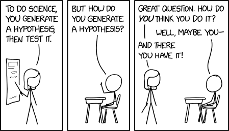
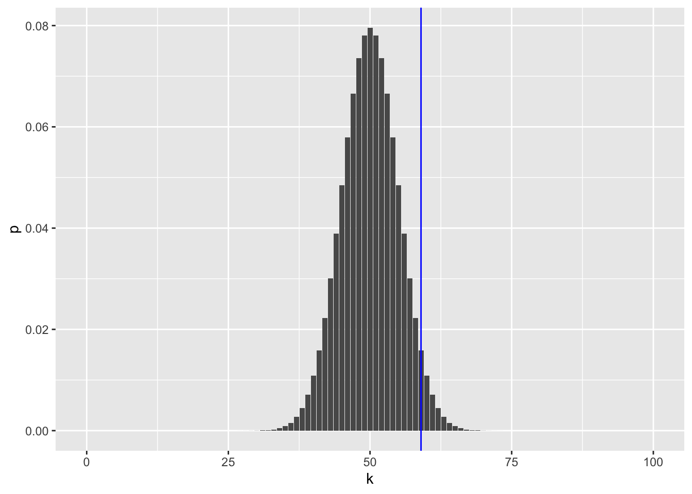
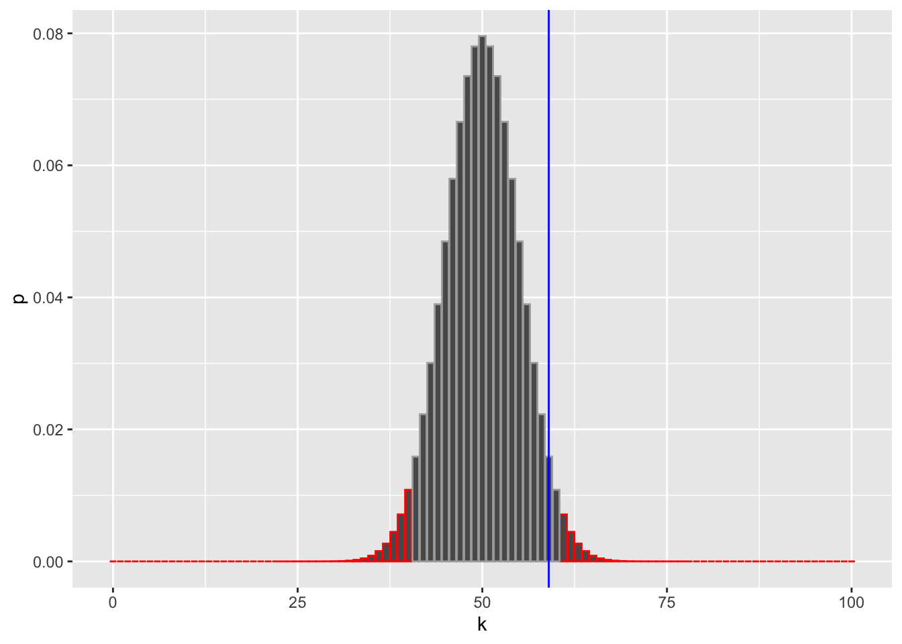
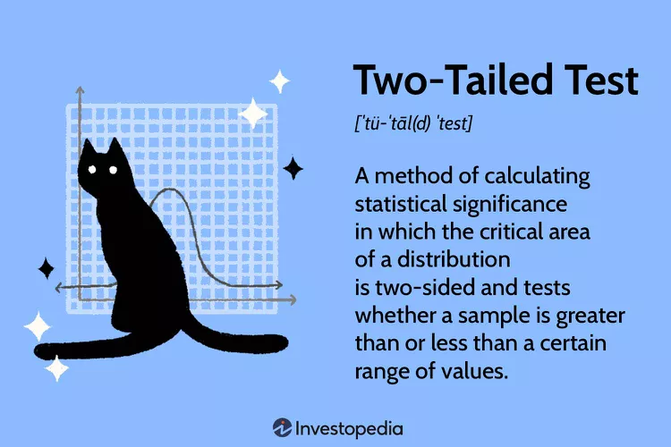

set.seed(0xdada)
numFlips = 100
probHead = 0.6
coinFlips = sample(c("H", "T"), size = numFlips,
replace = TRUE, prob = c(probHead, 1 - probHead))
head(coinFlips)[1] "T" "T" "H" "T" "H" "H"table(coinFlips)coinFlips
H T
59 41 
In statistical testing - decision making with uncertainty - we aim to use our collected data to test a null hypothesis about the population of interest. For example researchers screen genetic variants for associations with a phenotype, or gene expression levels for associations with disease.
Hypothesis testing quantifies how unusual the evidence is, assuming that the null hypothesis is true.
Hypothesis testing compares the value of your statistic (sample mean, etc) to what we would expect to see if the null hypothesis were true. If the data are too unsual, compared to what we expect under the null, then the null hypothesis is rejected.
What is the null hypothesis?
What is the alternative hypothesis?
set.seed(0xdada)
numFlips = 100
probHead = 0.6
coinFlips = sample(c("H", "T"), size = numFlips,
replace = TRUE, prob = c(probHead, 1 - probHead))
head(coinFlips)[1] "T" "T" "H" "T" "H" "H"table(coinFlips)coinFlips
H T
59 41 What is the null distribution for the number to heads?
library("dplyr")
k = 0:numFlips
numHeads = sum(coinFlips == "H")
binomDensity = tibble(k = k,
p = dbinom(k, size = numFlips, prob = 0.5))library("ggplot2")
ggplot(binomDensity) +
geom_bar(aes(x = k, y = p), stat = "identity") +
geom_vline(xintercept = numHeads, col = "blue")
How do we quantify whether the observed value, 59, is likely to be seen with a fair coin, or whether its deviation from the expected value (50) is already large enough for us to conclude with enough confidence that the coin is biased?
Choose a significance level \(\alpha\) (e.g. 0.05). We define a rejection region \(R\) consisting of outcomes that are sufficiently unlikely under \(H_0\), such that \(\Pr_{H_0}(X\in R)\le \alpha\). If the observed number of heads lies in \(R\), we reject \(H_0\); otherwise we do not reject.
The significance level is the evidential threshold we agree upon at the outset.
Sometimes the significance level is called the “alpha level” and denoted with \(\alpha\).
Reject or not to reject Null and alternative hypotheses do not have equal standing. The null hypothesis is the one being tested with the data. If the data is inconsistent with the null hypothesis we reject, otherwise, we do not reject.
In our example, the alternative hypothesis includes parameter values on both sides of the parameter value specified by the null hypothesis. The test is referred as two-tailed.
library("dplyr")
alpha = 0.05
binomDensity = arrange(binomDensity, p) |>
mutate(reject = (cumsum(p) <= alpha))
ggplot(binomDensity) +
geom_bar(aes(x = k, y = p, col = reject), stat = "identity") +
scale_colour_manual(
values = c(`TRUE` = "red", `FALSE` = "darkgrey")) +
geom_vline(xintercept = numHeads, col = "blue") +
theme(legend.position = "none")

The p-value is the probability (assuming the null distribution) of observing a value (test statistic) at least as extreme as the one observed.
In our case, this value is:
2*pbinom(41,100,.5)[1] 0.08862608Punch line: If the p-value of the data is less than or equal to \(\alpha\) then the data are judged to provide enough statistically significant evidence in order reject the \(H_{0}\) in favor of \(H_A\).
Question 1. Does the fact that we don’t reject the null hypothesis mean that the coin is fair?
Question 2. Would we have a better chance of detecting that the coin is not fair if we did more coin tosses? How many?
binom.test(x = numHeads, n = numFlips, p = 0.5)
Exact binomial test
data: numHeads and numFlips
number of successes = 59, number of trials = 100, p-value = 0.08863
alternative hypothesis: true probability of success is not equal to 0.5
95 percent confidence interval:
0.4871442 0.6873800
sample estimates:
probability of success
0.59 We are interested in testing \(H_{0}: \mu_{1}=0\) You have data \(x_1,\dots,x_n\) and assume they come from a population with mean \(\mu\). You want to test:
Null hypothesis: \(H_0:\ \mu = 0\) Alternative hypothesis (choose one):
Two-sided: \(H_1:\ \mu \neq 0\) Right-tailed: \(H_1:\ \mu > 0\) Left-tailed: \(H_1:\ \mu < 0\)
Test statistic
\(\bar{x} = \frac{1}{n}\sum_{i=1}^n x_i\) (sample mean) \(s = \sqrt{\frac{1}{n-1}\sum_{i=1}^n (x_i-\bar{x})^2}\) (sample standard deviation)
Then the one-sample t statistic is \[t = \frac{\bar{x} - 0}{s/\sqrt{n}} = \frac{\bar{x}}{s/\sqrt{n}}.\] Under \(H_0\) (and assuming approximate normality, or large \(n\)), this statistic follows a t distribution with \[\text{df} = n-1\] degrees of freedom. How the decision is made
Compute \(t\). Compute a p-value from the \(t_{n-1}\) distribution depending on the alternative:
Two-sided: \(p = 2P(T \ge |t|)\) Right-tailed: \(p = P(T \ge t)\) Left-tailed: \(p = P(T \le t)\)
Reject \(H_0\) if \(p \le \alpha\) (e.g., \(\alpha = 0.05\)).
Confidence interval connection A two-sided t-test at level \(\alpha\) is equivalent to checking whether 0 lies in the \((1-\alpha)\) CI: \[\bar{x} \pm t_{1-\alpha/2,\ n-1}\,\frac{s}{\sqrt{n}}.\]
Reference: Modern Statistics for Modern Biology